Monocular Depth Estimation
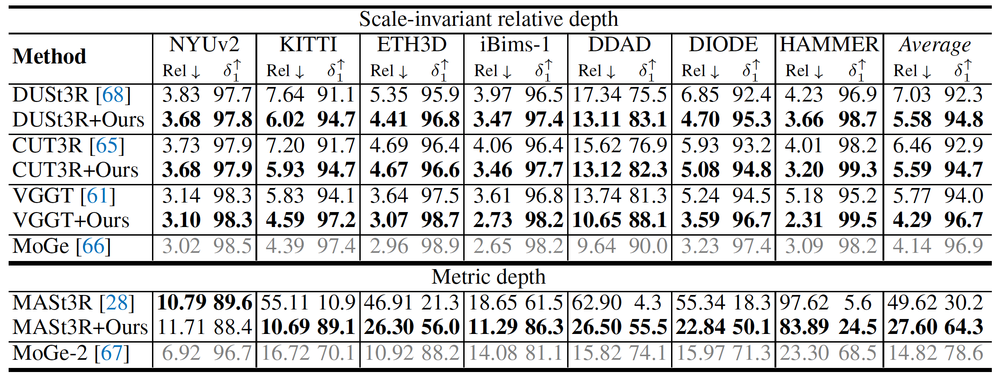Our fine-tuning method consistently improves the monocular depth estimation quality of various feed-forward 3D reconstruction models, including both two-view and multi-view, relative depth and metric depth models.
Multi-view Performance
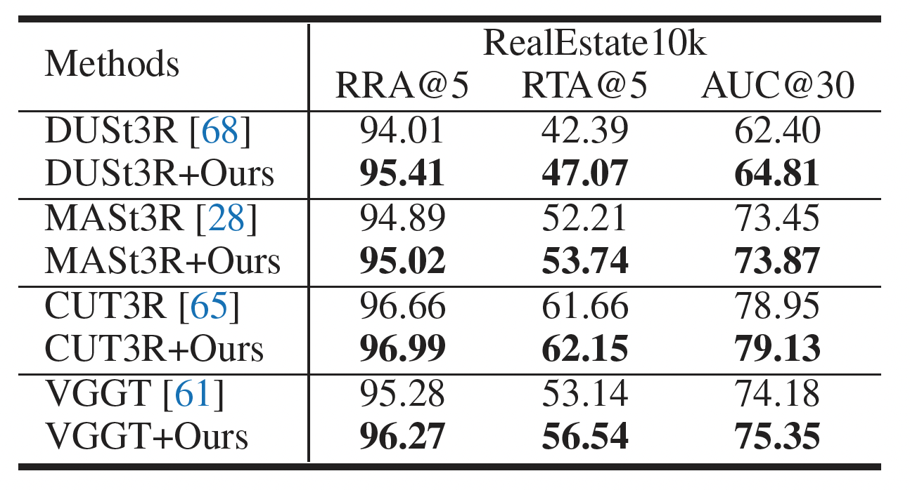
Our fine-tuning method consistently improves the pose accuracy of various feed-forward 3D reconstruction models, even without pose supervision during training. This suggests that the decoder functions as an implicit feature matcher, leveraging the improved encoder features to enhance performance without requiring explicit pose labels.
Qualitative Comparison
Our fine-tuning method improves the fine details and robustness of baseline methods.
2D Depth Estimation Results
Select a Scene:
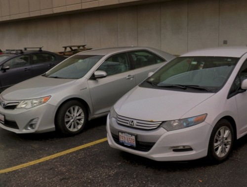
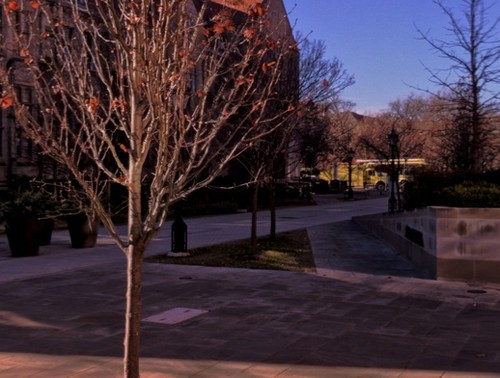
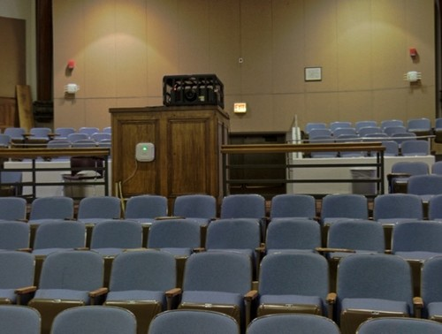
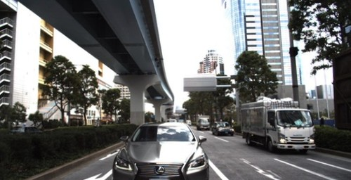

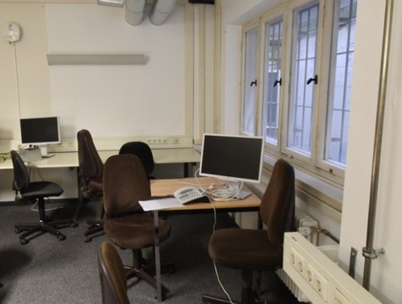
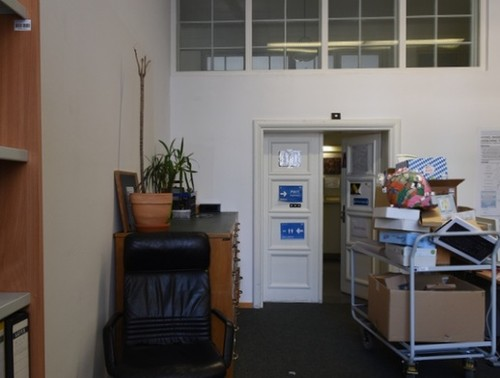
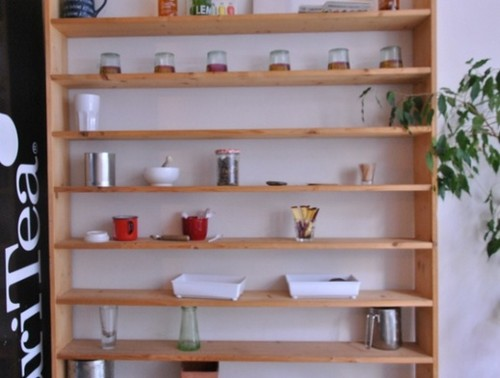
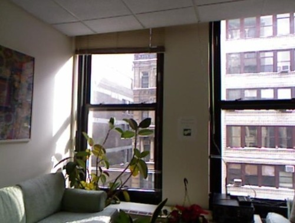
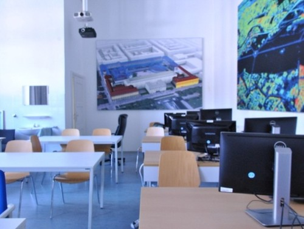
BibTeX
@inproceedings{ren2025fin3r,
title={Fin3R: Fine-tuning Feed-forward 3D Reconstruction Models via Monocular Knowledge Distillation},
author={Ren, Weining and Wang, Hongjun and Tan, Xiao and Han, Kai},
booktitle={The Thirty-ninth Annual Conference on Neural Information Processing Systems},
year={2025}
}